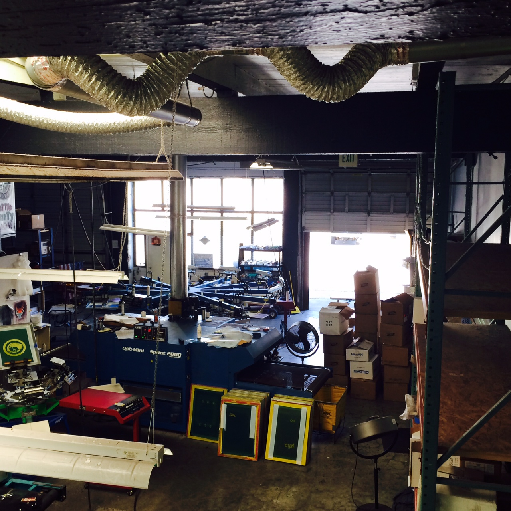

Let's print some stuff.
Here's a real basic run down of basic printing technique and strategy. Not gonna go overboard with theory or nit picky stuff as you generally will pick that up as you run into weird problems, and trouble shooting is something you really have to figure out yourself.
Pick a subject above and let's get into it!!
